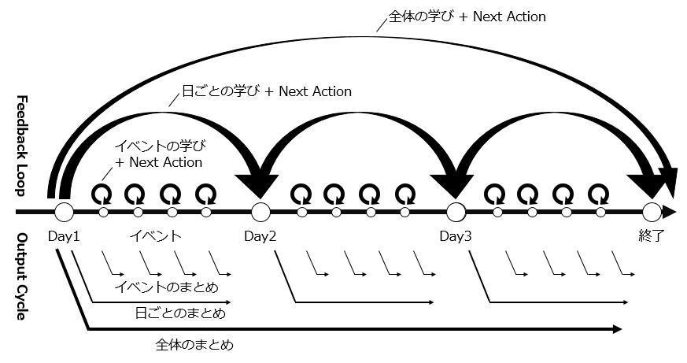

ふりかえりの手法をたくさん学ぼう
はじめに
2020年10月5日、ふりかえりの手法をたくさん学ぼうというイベントが開催されました。
ふりかえりチートシートという振り返り手法集から、twitterからの質問などをベースにその手法の実践方法などを紹介するイベントでした。
イベント内では11種類の振り返りの手法が紹介されていました。私は当日イベントには参加出来なかったのですが、youtubeで公開されている動画を見たところ、かなり面白く、実際に使ってみたいと思えるような手法が紹介されていたので記事に纏めて理解を深めてみようと思ってこの記事を書いてみました。
twitter のタグはこちらです：#ふりかえり実践会
ふりかえりチートシート
ふりかえりを拡張する「ふりかえりチートシート」
（DL版）ふりかえりチートシート
公開されている動画
振り返り手法の調べ方
動画時間：1時間14分00秒辺り
-
振り返りチートシート→日本語で一番手法が書かれているのはこれ
ふりかえりを拡張する「ふりかえりチートシート」
（DL版）ふりかえりチートシート
- Fun Retrospectives
-
Random Retrospectives
クリックするとランダムに手法が出てくる。普段なかなか見ない手法も出てくるので、やってみると面白い。
-
Agile Retrospective Resource Wiki
最近あんまり更新なさそうだが、7 thinking hatとか、手法単品で効果を発揮するものが多く紹介されている。変わり種を知りたい人におすすめ。
書籍
-
アジャイルレトロスペクティブズ：40ぐらいの手法が紹介されている。
-
これだけ！ ＫＰＴ
-
ふりかえり読本：60ぐらいの手法が紹介されている。
ふりかえり読本


象、死んだ魚、嘔吐
動画時間：22分15秒辺り
象、死んだ魚、嘔吐は悪いことの象徴。チームでうまく行ってないことをさらけ出しましょうという手法
-
象：凄く大きい、見えているけど、みんな見ないふりをしている課題・問題。表層化しているけど大きすぎてみようとしていない。これが何かをみんなで話していく。
-
死んだ魚：放っておくと腐っていく。そういう問題。放置しておくとまずいことになる問題ってなんだろう？ということを話し合う。
-
嘔吐：自分の胸の中に隠していて、吐き出せなかったこと。これをこの場で嘔吐する。
どういう場でやるといいか
チームの関係性がまだできていないときにやると意外と良かったりする。
自分の心の中に秘めているものとか、当たり前だけど、言えない問題が結構ある。関係性ができていないからこれ言っちゃっていいのかな。パートナー関係、上下関係、契約関係、主従関係がある状態でなかなか言い出せないことをこの場で吐き出してもらう。お互いが考えていることとか不安に思っていることが表層化する。
順番は気にせず、付箋に書いたり対話するだけでもいい。やばめの問題や小さめの問題まで色々出てくる。
出てきた後どうするかは皆さん次第。課題が出てきた後は、問題解決系の手法をやればいい。
斜に構える、構えないを繰り返す
動画時間：26分15秒辺り
- 斜に構える：物事をちょっとうがった見方をする。
- 構えない：素直に見る。
いわゆるロールプレイをする振り返り。
何か一つの出来事や、チームの今の状況とか、何かテーマに対して、まずは斜に構えてみる。
・これちょっと微妙じゃない
・っていうけどさ、こういうこともあるよね
・・・など。斜に構えて、皮肉っぽくいろいろ言ってみる。
その後、逆に斜に構えないで、誉めまくるとか、ここいいよねとか
これを何度か繰り返すといろいろな視点が出てくる。
普段は皆どちらかに偏っている（中庸の人もいるかもしれないが、多少どちらかにポイントが振られている）。
普段と違う自分が出せる。自分に気づける。何より、面白い。「あなたこういうこと言うんだねｗｗｗ」みたいな。
何か問題が出てきた時とか、テーマトークをするときに使いやすい手法。
視点を切り替えたり視座を変えたりするのは、問題を解決するのに重要なやり方なので、良さそう。
Happiness Radar（ハピネスレーダー）
動画時間：37分30秒辺り
感情の上下を時系列のタイムライン上に表現してみる。月曜日から金曜日までのタイムライン（横軸がT（時間））があった時に、お互いの感情、ハッピーだったかサッドだったかを上下で曲線を引いてみる。
線を引いて表現することもあればニコニコマーク・むっとしている顔・泣いている顔の三段階で付箋を貼る場所を分けて、この日に何があったかを付箋で張っていく。
感情、ハッピーかどうかを可視化することで、話のネタにする、振り返りのテーマの一つにする。ものによっては問題が表層化してくる。
最初の場づくり、又は、KPTの前、今週何やったかを話す場で使う。
ここ何かみんな下向きになってるけど、何があったっけ？という話がしやすくなる。
動画時間：43分10秒辺り
Q：ハピネスレーダーはYWTのYの代わりに使えるのかな
A：その通り。Yはいわゆるタイムラインとか、やったことは何か。手法は組み合わせることができる。
YWTのYの代わりにタイムラインを使うとか、story of a storyを使うとか、ハピネスレーダー使うとか、
時系列順に出してみてからじゃあそこから分かったことって何よとかいう使い方もできる。
そうやって組み合わせることもできる。
Small Starfish（スモールスターフィッシュ）
動画時間：40分30秒辺り
小さなヒトデ
スターフィッシュというアクテビティもあれば、スモールスターフィッシュというアクテビティもある。
中央から三角形に線が出ているヒトデ。
三角形で話すこと：keep, more of, less ofの三つ
-
keep：続けたいこと。ここ良かったねとか、Goodの意味合いのものでもいい。
-
more of：keepから派生。もっとこうするといいよね
-
less of：出すのがなかなか難しいが、今、過剰にやっていないか。ちょっとやめてみようよとか、やる時間減らしてみようよとか。
最初にkeepを出してから、more of, less of を出してみるというやり方でもいいし、最初からkeep, more of, less ofを出してみるやり方でもいい。
アクションの候補、アイディアを出してみるのに有効。良いことしか考えない。
プロブレムがない。more of, less ofの文脈の中でプロブレムっぽいものができることもあるが、発想の仕方がプラス方面からの発想になるので、
プロブレムに対しても前向きな意見が出やすい。
チームのいいところを伸ばしていきたい、モチベーションをガンガン上げていきたい場合に使ってみるとよい。
Happiness Door（ハピネスドア）
動画時間：43分50秒辺り
マネジメント3.0のプラクティスの一つ。
元々想定されている使い方：研修とか仕事場とか必ず通る帰りのドアに、3～4段階マークを張る。晴・曇り・雨・雷とか。
そのマークに、今日一日どうだったみたいなフィードバックを普選に書いてドアに貼って帰る。
フィードバックは書かなくてもいい。何も書かずに付箋だけ、四段階のうちこれというのを張る。
振り返りをするときに、一番最後に使うこともできる。
最初の場づくりにも使える。今週どうだった。ハピネスドアで気持ちを表してみる。今回曇りが多いけどどうだったのかなとかを話してみる。
そういう話のきっかけに使える。
さくっとやれてさくっとフィードバックがもらえるのがいい。
今までのアクションを付箋とかで並べて、
-
Dropped：やったけどやらなくなっちゃったもの。
-
Added：追加されたもの。
-
Pending：保留中のもの、途中で止まってるもの。
-
Doing：今やってるもの。
4分類ぐらいで今までのアクションを見返して、やり続けてるけど不必要だよねという話ができる。
分類した後は自由。Dropedのやつを追加でやらないといけないよねって話し合いをしてもいいし、
Doingばかりであれば、ちょっとやりすぎじゃない？我々無駄なことやってない？みたいに立ち止まる事のきっかけにも使える。
長期的な振り返りの一貫として使うといい。それかフラクタルな振り返り。
1～3カ月ぐらい。1週間スプリントでやっている方であれば、1カ月～2, 3カ月に一度、今までのアクションどうだったかなっていうのを見返すといい。
その中でアクションを整理して、注力すべき課題って何だったかなとか、チームがどう変わったかの成長の記録として使うこともできる。
温度計
動画時間：52分35秒辺り
水銀の温度計のイメージ。上から下までメモリがある温度計。
振り返りを終了するためのアクテビティ。振り返りの温度を下げていって振り返りを終了する。
アジャイルレトロスペクティブズの116ページ目にある。
五つの質問に一つずつ答えて行きましょうというもの。
-
感謝：この振り返りを通してお互いへの感謝を言い合う。
-
気付き・学び：この振り返りの中で気付いたもの何かありますかという話をする。
-
パズル・興味：ちょっとよくわからなかったけど興味が出たもの、詳しくはわからなかったけど興味があるものを話し合う。
-
提案付き苦情：ここはこうした方がいい、やり方変えた方がいい。具体的な提案を付けて苦情を出してください。
-
希望・願望：今後の振り返りで今後チームでこういうことしたいね
一つずつ質問を繰り返しながら、徐々に振り返りの場を静めていって、はいお終い。という感じ。
振り返りを終了する際に使える。
ワークショップで時間があるときに最後に使うこともできる。
今回のワークショップをやってみて、お互いワークショップのチームの中で頑張ってくれたから感謝を具体的にしあいましょう。
ワークショップの中で気付き、わからなかったけど興味があること、ワークショップのフィードバックだったり、ワークショップの進め方に対しての提案をしてもらって、チームでこういうことを持ち帰ってやりたいねとか、明日からこれやりたいんだよねとかの希望を言ってもらう。
そんな感じでクロージングする。
カラーコードドット
動画時間：1時間16分25秒辺り
ドットシール（赤、黄色みたいな丸いシール）
他の手法との組み合わせでできる。タイムラインで事実・出来事を洗い出した後、ドットシールで感情を表す。
感情：赤信号、青信号などの信号の色などを自分たちで定義。感情の偏りを見てみる。
書籍：アジャイルレトロスペクティブズの第五章60 page
感情の偏りを色で分類して、色のドットのシールが多ければ多いほどその感情が強い。
10個ぐらいドットシールを渡して、感情の強さに合わせてシールを張ってもらう。
強い感情はチームの次のアクションにつながりやすい。感情があるからこそ次の原動力につながりやすい。
フラクタル
動画時間：1時間18分45秒辺り
これは手法ではなくフレームワーク。
参考記事：カンファレンス・研修などの学びをふりかえるフレームワークの提案：フラクタル
フラクタルに振り返りをしましょうという考え方。
カンファレンスに参加した、イベントに行ってきた、研修に参加した、といったときに、どういう風に振り返りをすると効果的で学びを活かせるかというのを考えたやり方。
例えば、アジャイル関係のカンファレンスに行ったとして、たくさんあるセッションに参加したり、セッションの合間に他の人と話したりする。
こういった、自分にとってのイベントはたくさんある。そのイベント毎に振り返りをする。
イベント毎に振り返った結果を、振り返るだけではなく、アウトプットする。
イベント毎にこういうことあったよね。twitterでもブログでも何でもいい。振り返りとアウトプットを両方やる。
それをやった後、イベント毎の次は一日毎に振り返る。一日毎に全体を通してこういう学び、気付きがあったなというのを出す。
これをイベントの日ごとにやる。3日間のイベントなら、day1, day2, day3で振り返りをする。日ごとにもまとめる。
振り返りとアウトプットに綿密な関係がある。
振り返っていることを他の人に見せらせるようにするために言語化、構造化、抽象化が頭の中で何度も行われる。
→振り返りを効果的に行うことができる。
一日毎の振り返りをし終わったら、イベント全体で振り返る。
全体を通してどうだったか。イベント全体を通してもアウトプットする。
小さく振り返るのと中くらいで振り返るのと大きく振り返るのを繰り返してやるやり方。

図はカンファレンス・研修などの学びをふりかえるフレームワークの提案：フラクタルより抜粋
アウトプットと振り返りは強制ではない。
無理しなくていい。自分が出来るところを振り返る。辛くなったらアウトプットとかしなくてもいい。義務感を持つと続かないので。
イベントで振り返ることもできるし、チームの振り返りにも活かせる。
一日毎、一週間毎、一か月、三カ月、六カ月、一年ごとという形で、徐々に期間を大きくしながら振り返りをすることによって、長期的なアクションから短期的なアクションまでバランスよく出せる。
フレームワークなので、中身の手法は自由。
イベント毎にYWTで振り返り、日毎の振り返りや全体の学びはFun Done Learnでやるみたいな感じで、手法を変えてやることもできる。
555（triple nickels） / envelope（封筒）
動画時間：1時間24分00秒辺り
nickels：ニッケル効果から来ている。
envelopeというやり方にも似ている。
やり方：グループに分かれる。
8人を4人4人で分けて、4人で振り返りを行う（アイディア、やりたいことを出す）。
4人(Aグループ)で書き終えた付箋やホワイトボードにBグループが行き、BグループのところにはAグループが行く。
Aグループが書いていたものに上書きする形でBグループがアイディアを出していく。Aグループのアイディアにプラスアルファしていく。
書籍(アジャイルレトロスペクティブズ)のやり方は、A4用紙に一人一人アイディアを書いて、隣の人に渡してどんどん肉付けしていくやり方。
アイディアを出すやり方、アイディアを発散させるやり方。
story of a story
動画時間：1時間26分35秒辺り
元ネタは、Fun Retrospectivesに書いてある。
イメージとしては、タイムラインに近い。
時系列順に何があったかを話していく。
ホワイトボード一面に左下から右上に曲がりくねった道を書く。これが自分たちがたどってきた道。
その道の合間に何があったかをみんなで思い出していく。
コミュニケーションやコラボレーションに注力するとよい。
こういうことあったよね、などの事実を出すのはもちろんやるが、事実やkeep、problemを話してもいい。
事実の横に、このチームの中でどういうコミュニケーションがあったか。
誰と誰がペアプロしたとか。ここでのタスクの受け渡しが凄くうまくいった／うまくいかなかった。
その中から次のアイディアにつながるネタが出てくる。というやり方。
タイムラインは時系列上に左から右へ流れていくのが主流だが、
story of a storyだと、道の上で何があったか、グラフィカルに絵をかきながらやるので、
インスピレーションが刺激されやすいという利点がある。
Q：ちょっと難しそう？タイムラインの方が淡々としている。
A：タイムラインの方がわかりやすいと言えばわかりやすい。タイムラインは時系列上にどんなことがあったかという事実と感情を出すやり方。
story of a storyは質問が多い。
事実を出してみましょう→keepを考えてみましょう。事実の上にkeepを出していく→避けるべきことを書いていく→コミュニケーション・コラボレーションでうまくいったこと、微妙だったことを書いてみましょう。
付箋を色分けしながら書いていくと、道の上にいろいろと自分たちがたどってきた道が出来上がる。
30～40分ぐらいかけるとよい。
effort & pain(gain)
動画時間：1時間35分55秒辺り
出展：fun Retrospectives
アイディアを絞り込むための軸、2軸を作る。X軸Y軸。
- effort：アイディアを実行するために必要な労力・努力
- pain：どれだけチーム、自分にとっての痛みを解消してくれるか。 アイディアを2軸で分類して、そのうえでeffortが最も少なく、painが最も大きく解消できるものを 集中的に具体化していく。
- gain：painは日本人的には痛みを解消してくれるというとマイナス的に捕らえてしまう人もいるので、「どんなものが得られるか」という問いにすると、結果はそんなに変わらないが、アイディアの出方が多少変わる。視点が変わるので。gainがより得られやすいもの。problemの解消というよりは、keepのプラスアルファみたいな意見が出やすくなる。
闇鍋
動画時間：1時間37分50秒辺り
振り返りに話したいネタ・テーマをみんなでボックスに入れる。ボックスの中から引いたものを片っ端から話していく。
振り返りのテーマを決めるのにやりやすい。楽しく振り返りを行うことができる。
KPTに飽きたら使うといいかも。
同じ手法をやり続けてその手法に飽きることは皆あると思う。そういうときは、別の手法をやってみてもいい。
しかし、闇鍋みたいに、振り返りのテーマを決めるということって意外とやらない。いきなりKPTやったりする。テーマを決める練習も兼ねて一緒くたに話してみる。
声の大きさを無視できる。すべてのアイディアが平等な状態でボックスから引かれるので、チームの中で上下関係が生まれてしまっているようなチームだと使いやすいと思う。
バリューストリームマップ(VSM)
動画時間：1時間47分00秒辺り
振り返りの手法としても使えるので振り返りチートシートに載せている。
Value Stream(VS)：価値の流れ
→ソフトウェア開発なら：機能とか要件が生まれてからリリースされて顧客に届くまで。
VSにおいて、どんな要素、工程、プロセスがあるかを明らかにして、ボトルネックを解消するのがVSM。
ボトルネックを出すために、リードタイムとプロセスタイムを出す。
-
リードタイム：実際に工程が開始してから終了するまでの時間
-
プロセスタイム：工程の中でかかった時間
ものによっては、リードタイムとプロセスタイムに乖離が発生する。
→乖離が発生＝工程の中で待ちが発生している
→待ちが発生している＝無駄な部分
乖離が激しい部分やVSの中で何度もぐるぐるしているもの、手戻りが発生しやすいもの、VSをする中でどれだけ手戻りしているかという手戻り率を出したりする。
手戻り率が、リリースするまで（＝VSが最後に流れるまで）、かなりクリティカルになっているのであれば、そこを取り除くためにどんなアクションを取るか。
という、問題点を洗い出すために行うやり方がVSM。
振り返りチートシートに乗せた意図としては、フラクタルな振り返りという文脈で、長期間：3カ月、6カ月、1年に一度ぐらいはVSMしてほしい。
自分たちの価値を生み出してからリリースするまでの流れ、承認フローとかは結構無駄になっていることが多いので、そうところを見直して、あたらしいVSに直す。自分たちのプロセス全体を見直すということをやってほしい。
振り返りの中でやってもいいし、一日がかりになってしまうことも多いので、振り返りとはまた別にイベントとしてチームでやってみるのも良い。
音声だけでもできそうなもの
対話による学びの抽出
動画時間：1時間41分35秒辺り
問いかけを投げ合う。
例えば音声で、一週間の振り返りをするというときに、今週どんなことあった？どんな学び・気付きがあったかな？皆で話して、学びを言い合う。
質問の輪
動画時間：1時間42分35秒辺り
オフラインでみんなで円陣を組んでいる状態を想像して、
自分の左手の人に対して問いかける
「あなたは次のイテレーションでどんなことをすると良いと思いますか？どんなことをしたいですか？」
問いかけられた人
「私はこんなことをするといいと思います。」
次の左の人に同じ質問をする
「あなたは次のイテレーションでどんなことをすると良いと思いますか？どんなことをしたいですか？」
前の人に意見を聞いたうえで、自分の意見を言う。さっき○○さんはこういうことを言ったんだけど、私はここはこうした方がいいと思う。的な。
自分の意見を前の人の意見に上被せしながらどんどん意見を具体化していく手法。
輪を2～3週すると、凄く具体的かつ実行可能なアクションになりやすい。
対話・音声だけでもできるか、もちろん可視化した方がいい。文章やホワイトボードツールでも可しかしながらやると効率が上がる。
言葉だけでもできる。
ホワイトボードツールを使うとよりやりやすいもの
お絵かき系。
熱気球・スピードカー・帆船
動画時間：1時間44分35秒辺り
チームを気球というメタファーに置き換えて、自分たちをより上に加速させる、持ち上げてくれたものって何だったかという質問をする。
逆に、自分たちの上昇を妨げた、お荷物になっているものは何かを話す。
メタファーを通じて、お絵かきをしながら皆でどんどん書いていくと、普段のKPTと同じことができるが、
絵を描くことによってインスピレーションが刺激される。クリエイティビティが発揮されやすくなる。
汚い絵でもいいからみんなで書いてみる。色を塗ったり、遊びながら振り返ると楽しいアイディアが出てくる。
個人で使える振り返り手法
YWT
動画時間：29分00秒辺り
- Y:やったこと
- W:わかったこと
- T:次にやること
個人で使えるけどみんな知ってるだろうから略
参考：経験を振り返って次に活かすフレームワークYWT
ORID（オーリッド）
動画時間：29分10秒辺り
学びとかをどんどん自分の中で深めていく。振り返りの中でも「リフレクション：内省」と呼ばれるものに特化した手法。
-
O：Objective Question：事実を出す 今日何やったかな、どんなチャレンジしたかな、どんなことを意識したかな
-
R：Reflective Question：感情 先に上げた事実に対して、自分がどう思ったか、こういうことがあって嬉しかった、凄く悲しく感じた、これ暇だったな
-
I：Interpretative Question：OとRに対して、学び、気付きを抽出する
-
D：Decision Question：決定 学んだことから次の行動にどう生かすか、次の行動をどうするか
YWTに比べると重い。YWTは1, 2分でできるのに対してORIDは5分ぐらいかかる。YWTと比べると深い示唆が得られる。
普段の浅い振り返りだと気付けなかった部分に対してどんどん考えを深化させていくやりかた。普段の振り返りが浅いなと思っている人におすすめ。学びの場に使える振り返りなので、研修の後とかカンファレンスの後にもおすすめ。
毎日振り返りをするときに短期間でできる振り返りのおすすめ
Good & New
動画時間：1時間31分20秒辺り
その名の通り、良かったことと、新しい気付き、新しく得たものという観点で振り返る。
凄く単純。
良い所に着目する。自分のいいところを探すのが得意じゃない人ほど、1%でもいいからちょっと変化を考えてみるとか、
次の振り返りでGoodとNewが出るように一日動いてみるとか、意識しやすくなる。
毎日3～5分でできるので、書いてみるといいとおもう。
一人でも振り返りを続けるコツ
動画時間：1時間32分30秒辺り
-
１：週間化する、ルーティンにする、毎日同じ時間にやるようにする。
会社に通う電車を降りてから会社に着くまで・・・とか。
振り返りをやらなきゃという義務感のような意識が薄れやすくなるので良い。
-
２：見える場所にアクション・付箋を置いておく。
アクションを実行されるまで見えるところに置いておく。ディスプレイの下に張り付けるとか。
→強制的に動きやすくなる。
-
３：無理しない。これが一番。毎日やらなきゃっていう、義務感みたいなものを考えるとつらくなる。
KPT as ART
以下動画（過去イベントの動画）参照
いつもKPTでやっててマンネリ化してる時
感謝から始めてみるのは一つの手。感謝をお互い言いあうことで、良い所を見つける→お互いのことを知るということにつながる。→関係性を高める。 いろんな場面で、振り返り以外でも使える。
360度感謝、感謝
動画時間：32分55秒辺り
いろんな人、自分からすべての人、チームの周りの人たちに対して一人ひとり、「○○さんここはすごく助かったよ」という感じで感謝をしあう。全方位でお互いに感謝をしあう。
振り返りに慣れていない人が、最初に「よし、振り返りをやってみよう！」という場合に有効に作用する。
アジャイルレトロスペクティブズには「感謝」が振り返りを終了するアクティビティとして紹介されていた。
いわゆる場づくりとして使える。感謝も360度感謝も。
感謝から始めると、場が凄く前向きな、ポジティブな場になりやすい。プロジェクトが終わった後に感謝を表明してからお互いの話しやすい、アイディアを言いやすい状態を作ってから振り返りの中身に入るとか。
っていうことをすると、場づくりで感謝を言うのと言わないのとでは、結構アイディアの出方とか、お互いの発言の気の使いように如実に差が出る。
360度感謝は振り返りの最初にやってもいいし、最後にやってもいい。KPT＋感謝でもいいと思う。
サンクスカード
360度感謝、感謝に合わせて使う。
以下動画（過去イベントの動画）の18分20秒辺り
・サンクスカード。感謝系のアクテビティ
感謝のカードを付箋とかに貼って、次の日読む。誉めるのが目的ではなく、協力を促す目的で人を誉める。
kudos wall
動画時間：36分25秒辺り
・kudos wall：感謝の壁。マネジメント3.0であったもの。感謝を感じたらペタペタはる。
チームによっては、kudoが多かった人を皆で拍手しましょうとか。そんな感じで盛り上げる。
※kudos：称賛
うまく何かを停止させたい
badなことをやってたりとか、どうにも悪い習慣がついているときに、そこに気づかせてもらえるようなアクティビティ。
Stop Start Continue(SSC)
動画時間：47分15秒辺り
日本だとKPTが一番浸透しているが、世界だとSSCが一番浸透しているはず。
-
Stop：やめること、やめたほうがいいこと
-
Start：これからやったほうがいいこと
-
Continue：続けること
Starfish（スターフィッシュ）
動画時間：47分50秒辺り
Small Starfishはkeep, more of, less ofの三角形だったが、Starfishでは五角形になる。keep, more of, less of, Stop, Start.
keepを軸にStop, Startを出してもいいし、Stop, Startを直接出してもいい。
Stopとかless ofみたいな「止める」っていうのはなかなか出づらい。
それらが出やすくするためには、「まずはStop考えてみましょう。」といった形で、最初にStop系のことを考えさせると割と出やすくなる。
最初にkeepとか、プラスアルファのことを考えてしまうと、止めるという方向に思考のスイッチが行きづらくなる。
やめさせたい、何か止めた方がよさそうだな、皆アクションがパンパンになってるなみたいなのがあれば、
まずは、止めた方がいいこと、やることを減らすことから考えてみようぜ、という問いかけをしてから、
プラスでやりたいことがあれば考えてみようか。という風にファシリテートしてみるのはあり。
Following up on Action Items
動画時間：49分40秒辺り
今までやったアクションってどうでした？を考えるやり方。
チームでありがちなのは、振り返りの中でアクションがどんどん積み重なっていって、やることがめちゃくちゃ増えてるような状況。
そうなってしまったチームにとって、過去やったアクションって、どうなってた？結果的にどこが変わった？というように、過去のアクションを見返す、フォローアップするのがFollowing up on Action Items.
チートシートに乗ってないやつでいいやつ
デイリーハッスル
動画時間：1時間51分30秒辺り
最近やって楽しかったもの。
元ネタはXP祭り2020でLTがあったらしい。
振り返りに心理学を用いるといいよね。
一日の仕事・生活をしていく中で、日々、自覚はできてないけど感じているストレスがある。
言葉にしようと思うと出てくる、ちょっとしたイラっとしたこととか。
→これをデイリーハッスルというらしい。
日々のデイリーハッスルを「今日のデイリーハッスルなんだった？」を聞いてやったのが楽しかった。
デイリーハッスルというパワーワード。一回やると頭に残る。他の手法やっててもハッスルが出てくる。
ストレスに感じたことを皆で吐き出そうよという感じのものなので、日々これだけストレス感じているんだなと気づくこともできるし、
君、これがストレスだったの？ということに気付くこともできる。
割と愚痴大会になりやすいので、ポジティブ面の振り返りと併用するのが良い。
※ハッスル：面倒なこと、口論、イライラさせることという意味
hustle：ハッスルする、元気
hassle：口論、面倒、困ったこと
最初の場づくり、アイスブレイク代わりに使ってもいいし、KPTにワンエッセンスとして使ってもいい。
参考
qiitaの記事:「ふりかえりの手法をたくさん学ぼう」で紹介された手法まとめ